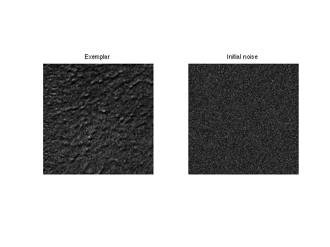
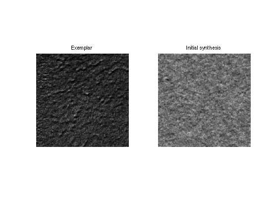
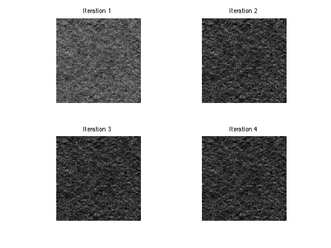
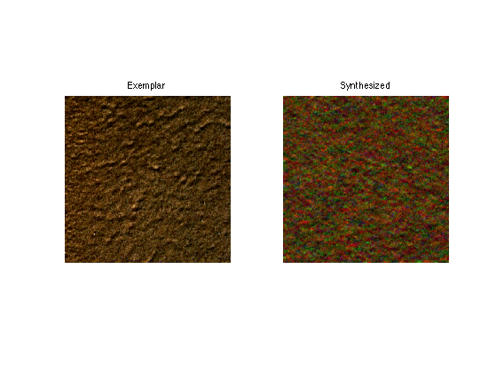
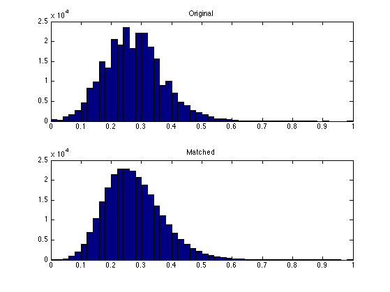
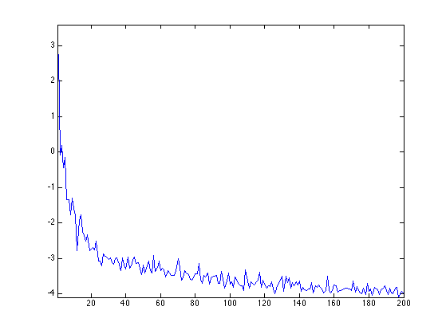
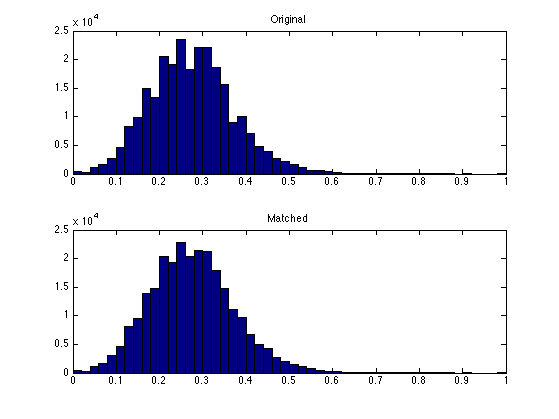
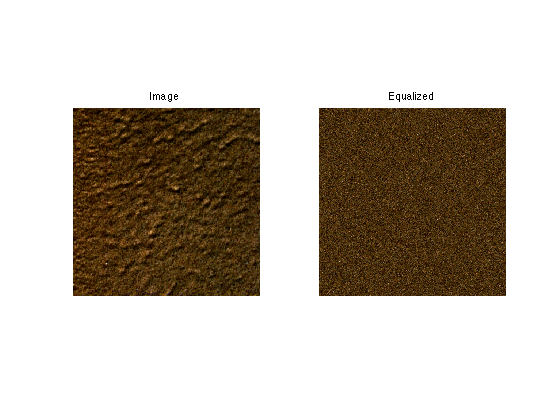
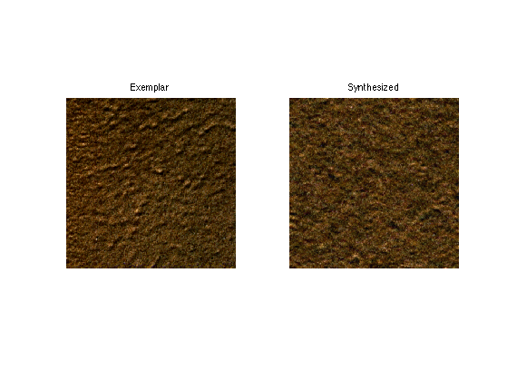

Texture Synthesis Using Wavelets
This numerical tour explores texture synthesis using wavelets.
Contents
Image synthesis is obtained by drawing an image at random that satisfies some modeling constraint, that are usually learned from a given exemplar texture.
Installing toolboxes and setting up the path.
You need to download the following files: signal toolbox and general toolbox.
You need to unzip these toolboxes in your working directory, so that you have toolbox_signal and toolbox_general in your directory.
For Scilab user: you must replace the Matlab comment '%' by its Scilab counterpart '//'.
Recommandation: You should create a text file named for instance numericaltour.sce (in Scilab) or numericaltour.m (in Matlab) to write all the Scilab/Matlab command you want to execute. Then, simply run exec('numericaltour.sce'); (in Scilab) or numericaltour; (in Matlab) to run the commands.
Execute this line only if you are using Matlab.
getd = @(p)path(p,path); % scilab users must *not* execute this
Then you can add the toolboxes to the path.
getd('toolbox_signal/'); getd('toolbox_general/');
Multi-scale Texture Synthesis
The decay of wavelet coefficients caraterize pointwise singularities in images and texture. Histogram equalization enable the synthesis of texture with singularities. This corresponds to the texture synthesis algorithm of Heeger and Bergen.
Load a texture.
n = 512;
name = 'texture';
M = load_image(name, n);
M = rescale( sum(M,3) );
For Scilab users: you should increase the size of the memory. Warning: execute this line only once.
extend_stack_size(4);
First we compute the wavelet coefficients of the texture. We use a translation invariant transform.
options.ti = 1; Jmin = 4; MW = perform_wavelet_transf(M(:,:,1), Jmin, +1, options);
We initialize the synthesis by a random noise with the same gray values.
M1 = perform_hist_eq(randn(n,n), M);
Display.
clf; imageplot(M, 'Exemplar', 1,2,1); imageplot(M1, 'Initial noise', 1,2,2);
We also compute the wavelet transform of the noise.
MW1 = perform_wavelet_transf(M1, Jmin, +1, options);
A random texture is obtained by histogram equalization of each wavelet scale.
for i=1:size(MW,3) MW1(:,:,i) = perform_hist_eq(MW1(:,:,i), MW(:,:,i)); end
We retrieve the texture by inverse wavelet transform.
M1 = perform_wavelet_transf(MW1, Jmin, -1, options);
Display.
clf; imageplot(M, 'Exemplar', 1,2,1); imageplot(M1, 'Initial synthesis', 1,2,2);
Exercice 1: (check the solution) Iterate these two steps (spatial and wavelet histogram matching) until convergence to a stable step.
exo1;
Multi-scale Color Texture Synthesis
It is possible to perform color synthesis by synthesizing independantly each channel over a well chosen color space.
Load a color texture.
n = 512;
M = rescale( load_image('texture', n) );
Exercice 2: (check the solution) Perform color texture synthesis with wavelets over the RGB space.
exo2;
Exercice 3: (check the solution) Try with other color spaces, for instance PCA adapte space.
exo3;
Multi-dimensional Color Equalization
To maintain color consistency, it is possible to use a color equalization.
Initial image.
M1 = randn(n,n,3);
A simple (but not very acurate) method to perform in performing independant channel equalization over randomized color space. This needs to be repeated several time to converge to a real matching.
Compute a random 3x3 orthogonal matrix.
[U,R] = qr(randn(3));
Perform the change of color space.
d = reshape(M,[n^2 3])*U; d1 = reshape(M1,[n^2 3])*U;
Perform the equalization
for c=1:3 d1(:,c) = perform_hist_eq(d1(:,c),d(:,c)); end
Perform the inverse change of color space.
M1 = reshape(d1*U',[n n 3]);
Compares the histogram of the R channel. You can see that the match is imperfect.
m = M(:,:,1); m1 = M1(:,:,1); clf; subplot(2,1,1); hist(m(:),50); title('Original'); subplot(2,1,2); hist(clamp(m1(:)),50); title('Matched'); M1 = randn(n,n,3); for i=1:3 M1(:,:,i) = perform_hist_eq(M1(:,:,i), M(:,:,i)); end
Exercice 4: (check the solution) Perform iteratively the randomized matching. Plot the decay of the mathing error.
exo4;
Display the histograms of the R channels. The match is not perfect, but it is better than with a single projection.
m = M(:,:,1); m1 = M1(:,:,1); clf; subplot(2,1,1); hist(m(:),50); title('Original'); subplot(2,1,2); hist(clamp(m1(:)),50); title('Matched');
Display the equalized color image;
clf; imageplot(M, 'Image', 1,2,1); imageplot(M1, 'Equalized', 1,2,2);
Exercice 5: (check the solution) Perform color texture synthesis with wavelets using this color histogram matching at each iteration.
exo5;